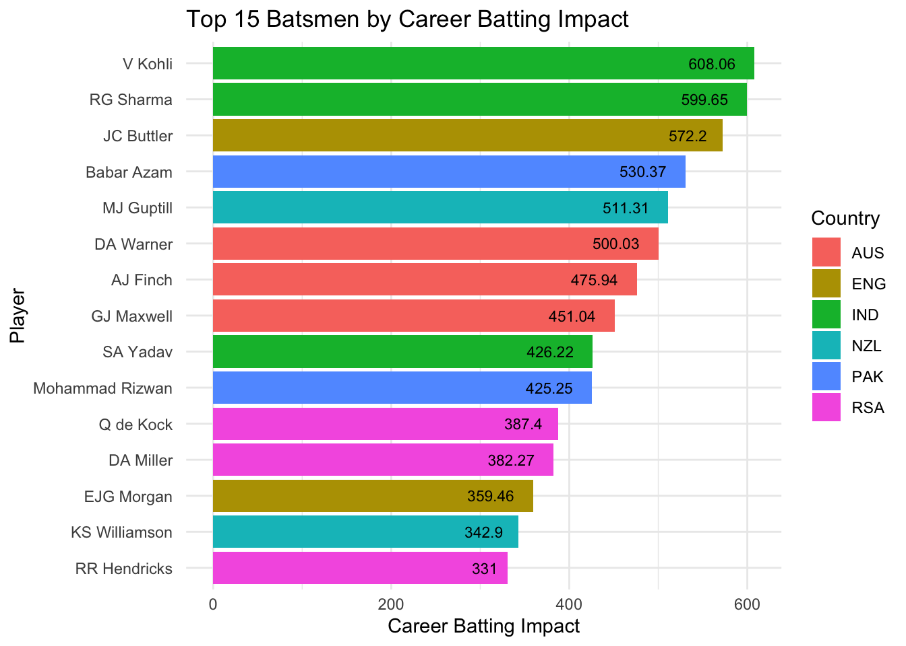
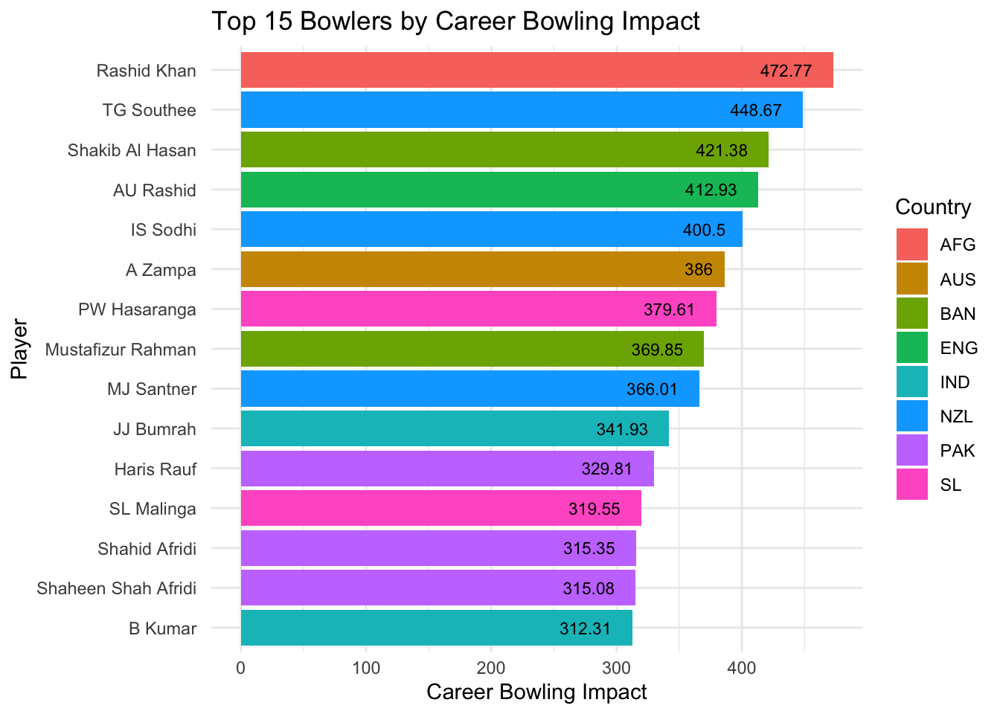
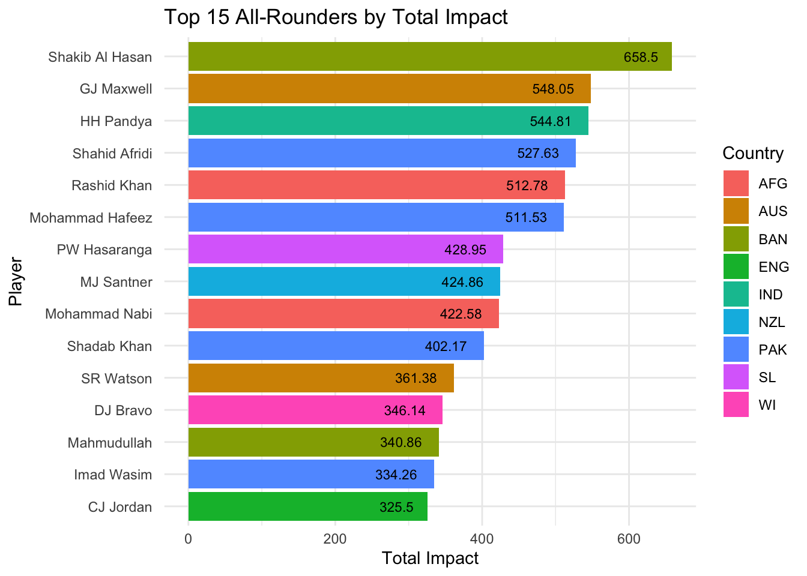
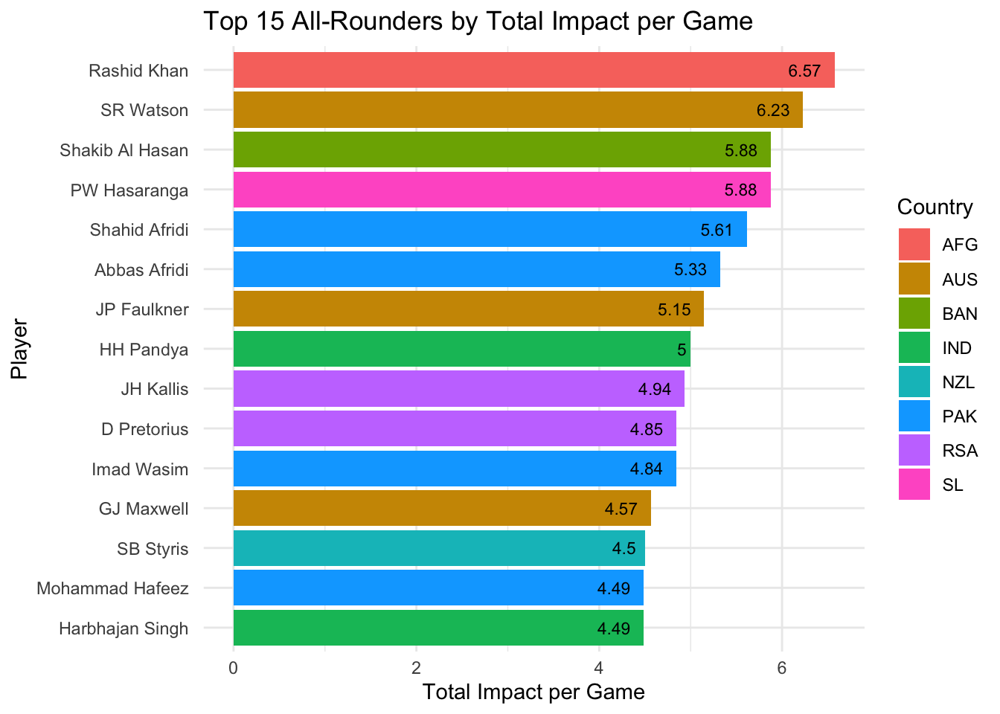
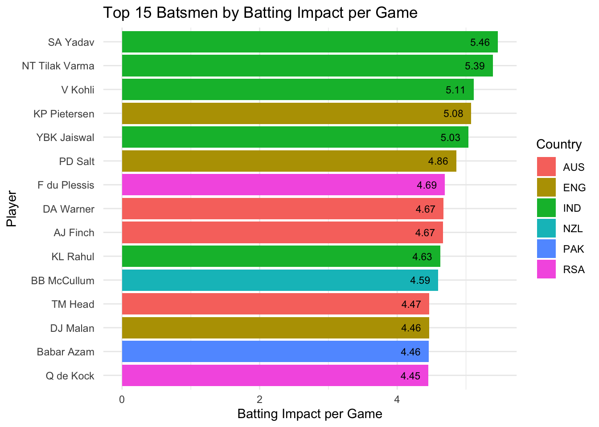
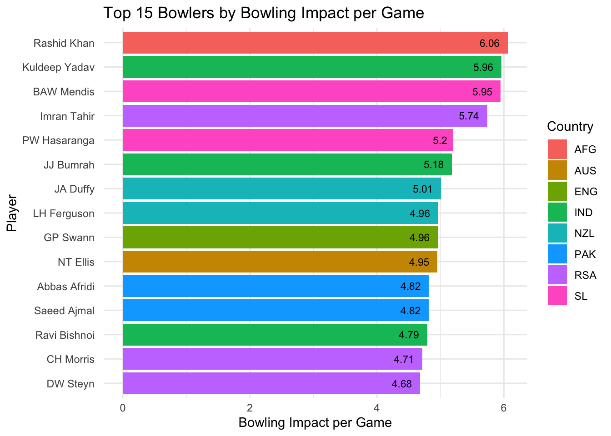

2 Creating Player Rankings - Player_Rankings.R
2.1 Summarize Impact by Player
Join batting and bowling data for player rankings
Player Rankings based on Batting and Bowling ratings without making separate players one for batting and bowling
player_rankings <- player_data %>%
group_by(Player, Country) %>%
summarise(
CareerBatImpact = sum(BattingImpact, na.rm = TRUE),
CareerBowlImpact = sum(BowlingImpact, na.rm = TRUE),
MatchesPlayed = n()
) %>%
mutate(TotalImpact = CareerBatImpact + CareerBowlImpact) %>%
arrange(desc(TotalImpact))Join player batting bowling data
Loop through the player rankings unique elements and get the higher of their bat bowl impacts to use in new dataframe
for (player in unique(player_rankings$Player)){
#if quote at the end of player name string, skip
if(endsWith(player, " ")){
next
}
person = player_rankings %>% filter(Player == paste(player, " ", sep = ""))
person2 = player_rankings %>% filter(Player == player)
# get which one of person and person2 has non zero batting impact and choose that
if(person$CareerBowlImpact[1] == 0 & person2$CareerBowlImpact[1] == 0){
#find which bat impact isn't 0
if(person$CareerBatImpact[1] != 0){
player_rankings_2 = rbind(player_rankings_2, person)
next
}
else{
player_rankings_2 = rbind(player_rankings_2, person2)
next
}
}
if(person$CareerBatImpact[1] == 0){
#only bowling records
person$CareerBatImpact[1] = person2$CareerBatImpact[1]
player_rankings_2 = rbind(player_rankings_2, person)
}
else if(person2$CareerBowlImpact[1] == 0){
#only batting records
person2$CareerBowlImpact[1] = person$CareerBowlImpact[1]
player_rankings_2 = rbind(player_rankings_2, person2)
}
else if(person$CareerBowlImpact[1] == 0){
#only batting records
person$CareerBowlImpact[1] = person2$CareerBowlImpact[1]
player_rankings_2 = rbind(player_rankings_2, person)
}
else if(person2$CareerBatImpact[1] == 0){
#only bowling records
person2$CareerBatImpact[1] = person$CareerBatImpact[1]
player_rankings_2 = rbind(player_rankings_2, person2)
}
}Correct naming issue
2.2 Player Comparison and Visualization
Descriptive Stats and create player tables
player_rankings_2$TotalImpact = player_rankings_2$CareerBatImpact + player_rankings_2$CareerBowlImpact
player_rankings_2 = player_rankings_2 %>% arrange(desc(TotalImpact))
player_rankings_2$BatImpactperGame = player_rankings_2$CareerBatImpact / player_rankings_2$MatchesPlayed
player_rankings_2$BatImpactperGame_Z = (player_rankings_2$BatImpactperGame - mean(player_rankings_2$BatImpactperGame, na.rm = TRUE)) / sd(player_rankings_2$BatImpactperGame, na.rm = TRUE)
player_rankings_2$BowlImpactperGame = player_rankings_2$CareerBowlImpact / player_rankings_2$MatchesPlayed
player_rankings_2$BowlImpactperGame_Z = (player_rankings_2$BowlImpactperGame - mean(player_rankings_2$BowlImpactperGame, na.rm = TRUE)) / sd(player_rankings_2$BowlImpactperGame, na.rm = TRUE)
player_rankings_2$TotalImpactperGame = player_rankings_2$TotalImpact / player_rankings_2$MatchesPlayed
player_rankings_2$TotalImpactperGame_Z = player_rankings_2$BatImpactperGame_Z + player_rankings_2$BowlImpactperGame_Z
player_rankings_2 = player_rankings_2 %>% arrange(desc(MatchesPlayed)) #Model all matches
player_rankings_display = player_rankings_2 %>% filter(MatchesPlayed >= 20)
player_database = player_rankings_2 %>% filter(MatchesPlayed >= 5)
bowlimpactmedian = quantile(player_rankings_display$BowlImpactperGame, 5/11)
batimpactmedian = quantile(player_rankings_display$BatImpactperGame, 3.5/11)
player_rankings_display2 = player_rankings_display %>% dplyr::filter(BowlImpactperGame > bowlimpactmedian)
allrounderranking = player_rankings_display2 %>% dplyr::filter(BatImpactperGame > batimpactmedian)
allrounderranking = allrounderranking %>% arrange(desc(TotalImpactperGame))
(player_rankings_display)## # A tibble: 406 × 12
## # Groups: Player [406]
## Player Country CareerBatImpact CareerBowlImpact MatchesPlayed TotalImpact
## <chr> <chr> <dbl> <dbl> <int> <dbl>
## 1 "RG Sha… IND 600. -10.9 153 589.
## 2 "JC But… ENG 572. 0 132 572.
## 3 "Mahmud… BAN 247. 93.8 124 341.
## 4 "AU Ras… ENG -27.6 413. 122 385.
## 5 "DA Mil… RSA 382. 0 122 382.
## 6 "GJ Max… AUS 451. 97.0 120 548.
## 7 "V Kohl… IND 608. 4.38 119 612.
## 8 "Babar … PAK 530. 0 119 530.
## 9 "TG Sou… NZL 29.4 449. 119 478.
## 10 "IS Sod… NZL -23.1 400. 119 377.
## # ℹ 396 more rows
## # ℹ 6 more variables: BatImpactperGame <dbl>, BatImpactperGame_Z <dbl>,
## # BowlImpactperGame <dbl>, BowlImpactperGame_Z <dbl>,
## # TotalImpactperGame <dbl>, TotalImpactperGame_Z <dbl>Plot top 15 batsman by career bat impact
par(mfrow = c(1, 1)) # Set up the plotting area to have one plot
library(ggplot2)
top_batsmen <- player_rankings_display %>%
arrange(desc(CareerBatImpact)) %>%
head(15)
ggplot(top_batsmen, aes(x = reorder(Player, CareerBatImpact), y = CareerBatImpact, fill = Country)) +
geom_bar(stat = "identity") +
coord_flip() +
labs(title = "Top 15 Batsmen by Career Batting Impact",
x = "Player",
y = "Career Batting Impact") +
theme_minimal() +
geom_text(aes(label = round(CareerBatImpact, 2)), hjust = 1.4, color = "black", size = 3) # Add labels for clarity
Plot top 15 bowlers by career bowl impact
top_bowlers <- player_rankings_display %>%
arrange(desc(CareerBowlImpact)) %>%
head(15)
ggplot(top_bowlers, aes(x = reorder(Player, CareerBowlImpact), y = CareerBowlImpact, fill = Country)) +
geom_bar(stat = "identity") +
coord_flip() +
labs(title = "Top 15 Bowlers by Career Bowling Impact",
x = "Player",
y = "Career Bowling Impact") +
theme_minimal() +
geom_text(aes(label = round(CareerBowlImpact, 2)), hjust = 1.4, color = "black", size = 3) # Add labels for clarity
Plot top 15 all-rounders by total impact, partitioning the batting and bowling section
top_allrounders <- allrounderranking %>%
arrange(desc(TotalImpact)) %>%
head(15)
ggplot(top_allrounders, aes(x = reorder(Player, TotalImpact), y = TotalImpact, fill = Country)) +
geom_bar(stat = "identity") +
coord_flip() +
labs(title = "Top 15 All-Rounders by Total Impact",
x = "Player",
y = "Total Impact") +
theme_minimal() +
geom_text(aes(label = round(TotalImpact, 2)), hjust = 1.4, color = "black", size = 3) # Add labels for clarity
Plot top 15 all-rounders by Batting and Bowling Impact per Game
top_allrounders_per_game <- allrounderranking %>%
arrange(desc(TotalImpactperGame)) %>%
head(15)
ggplot(top_allrounders_per_game, aes(x = reorder(Player, TotalImpactperGame), y = TotalImpactperGame, fill = Country)) +
geom_bar(stat = "identity") +
coord_flip() +
labs(title = "Top 15 All-Rounders by Total Impact per Game",
x = "Player",
y = "Total Impact per Game") +
theme_minimal() +
geom_text(aes(label = round(TotalImpactperGame, 2)), hjust = 1.4, color = "black", size = 3) # Add labels for clarity
Plot top 15 Batsman by Batting Impact per Game
top_batsmen_per_game <- player_rankings_display %>%
arrange(desc(BatImpactperGame)) %>%
head(15)
ggplot(top_batsmen_per_game, aes(x = reorder(Player, BatImpactperGame), y = BatImpactperGame, fill = Country)) +
geom_bar(stat = "identity") +
coord_flip() +
labs(title = "Top 15 Batsmen by Batting Impact per Game",
x = "Player",
y = "Batting Impact per Game") +
theme_minimal() +
geom_text(aes(label = round(BatImpactperGame, 2)), hjust = 1.4, color = "black", size = 3) # Add labels for clarity
Plot top 15 Bowlers by Bowling Impact per Game
top_bowlers_per_game <- player_rankings_display %>%
arrange(desc(BowlImpactperGame)) %>%
head(15)
ggplot(top_bowlers_per_game, aes(x = reorder(Player, BowlImpactperGame), y = BowlImpactperGame, fill = Country)) +
geom_bar(stat = "identity") +
coord_flip() +
labs(title = "Top 15 Bowlers by Bowling Impact per Game",
x = "Player",
y = "Bowling Impact per Game") +
theme_minimal() +
geom_text(aes(label = round(BowlImpactperGame, 2)), hjust = 1.4, color = "black", size = 3) # Add labels for clarity